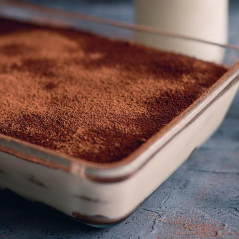

Sobremesa cremosa de páscoa

Procurando uma receita de sobremesa para servir depois do bacalhau de Páscoa? Já achou! Este ovo de Páscoa na travessa vai fazer as delícias de toda a família e finalizar o almoço de Páscoa do jeito mais gostoso possível!
Ingredientes:
- 2 latas de leite condensado
- 2½ caixas de creme de leite
- 1 pacote de biscoito de chocolate
- 4 gemas de ovo
- 150 gramas de chocolate em barra
- 1 colher de chá de essência de baunilha
- ½ xícara de chocolate ou cacau em pó
- leite para molhar os biscoitos
Modo de Fazer:
- Numa panela misture o leite condensado, as duas caixas de creme de leite e a essência de baunilha. Leve ao fogo e fique mexendo até ficar cremoso.
- Passe as gemas de ovo por uma peneira, para filtrar a película e assim reduzir o cheiro e gosto de ovo. Coloque na panela e continue mexendo por mais 5 minutos ou até espessar. Desligue e deixe esfriar completamente.
- Em seguida pegue os biscoitos de chocolate e umedeça-os com um pouco de leite. Espalhe uma camada do creme branco anterior numa travessa e cubra com uma camada de biscoito. Repita as camadas de biscoito e creme até um pouco antes do topo da travessa e reserve na geladeira por 10-15 minutos.
- Por fim pique o chocolate e coloque derretendo no microondas ou em banho-maria. Adicione o restante creme de leite (meia caixa) e misture até obter uma ganache de chocolate.